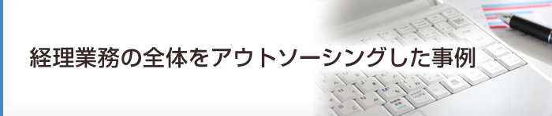
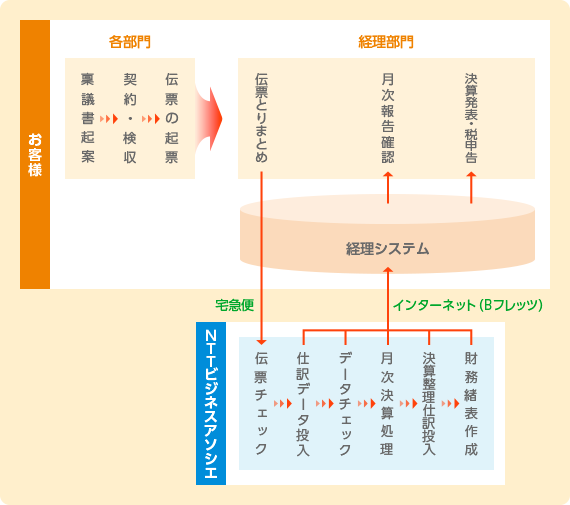

コスト削減・業務改善に向けてフルアウトソーシングを決断！
経理業務は、経営に直結する重要な業務です。それゆえに、アウトソーシングへの決断も容易でありません。徹底的なコスト削減を推進するために、経理業務のフルアウトソーシングを決断された事例です。
お客さま情報
製造業G社様 売上高100億円 従業員数500名
委託業務内容
経理・財務関連
（買掛金/売掛金/固定資産管理/決算業務）


当初の課題認識
部長・課長各1名、一般社員3名、派遣スタッフ1名の計6名で経理業務を実施していたが、社員1名が退職することとなったため、これを契機に抜本的なコスト削減に取り組んだ。
当初は新規社員の採用も検討したが、今後も社員の入れ替わりが想定され、その都度、採用コスト、引継ぎコスト、育成コストが発生するとともに、経理品質の確保も困難になるリスクがあることから、経理業務の一部を信頼できる業者にアウトソーシングすることが最も適切な手段であるとの結論に至った。この取り組みは米国の親会社とも共有し、意思決定の節目毎に協議を行ってきた。
業者選定のポイント
まずは信頼性。経理業務という会社にとって重要な業務をアウトソーシングする以上、安心して業務を任せられる業者の選定が必須だった。また、米国の親会社がSEC（アメリカ証券取引委員会）に上場していることもあり、高い経理品質の提供も必須だった。
そして提案力。経理の業務フローについては、継続して改善に取り組んで行っていたが、お客さまでは最善のやり方ではないという認識だった。お客さまは委託する業者には業務を実施していく中で、新たな目で業務の無駄を発見し、改善策を提案してもらい、更なるコスト削減を目指して欲しいと考えていた。もちろん、委託費も業者を選定する際に考慮してはいたが、費用一辺倒ではなく総合的な実力を見て業者を選ぶこととしていた。お客さまではこれらが担保されれば、オフサイトでもオンサイトでも業務の実施場所には特に拘りはなかった。
NTTビジネスアソシエを選んだ決め手
お客さまはNTT系の経理アウトソーサーということで、知名度が高く、安心感があると考えていた。また、NTTビジネスアソシエは経理業務のオペレーションだけでなく業務改善のコンサルティング実績もあり、業務改善提案力も期待されていた。更に、米国で知名度の高い経営研究機関であるIQPC（International Quality & Productivity Center）から、2008年にシェアードサービス最優秀企業賞を受賞していることも、米国親会社からの高評価につながった。
その他
業務はNTTビジネスアソシエのオフィスにて実施するため（オフサイト）、お客さまの経理システムにリモートでアクセスする仕組みが必要だった。グループのITセキュリティポリシーが厳格であることから、予めアクセス権限を設定した専用端末を貸与することで、セキュリティポリシーをクリアすることができた。また、両オフィス間は専用線ではなくBフレッツを利用したVPNでリンクすることにより、セキュリティを確保した安価なアクセスが可能となった。
コンサルティングの概要
